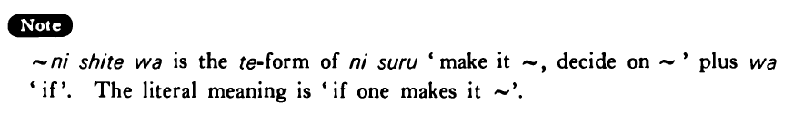

←
DoJG
→
にしては
(B. 309)
Example sentences
(ksa).
高山さんは日本人
にしては
大きい・大きいです。
Mr. Takayama is big for a Japanese person.
(ksb).
ボブは日本語をよく勉強している
にしては
下手だ・下手です。
Considering that Bob is studying Japanese hard, he is poor at it.
(a).
八月
にしては
涼しいですね。
For August is it cool, isn't it?
(b).
これは日本の車
にしては
大きいですね。
For a Japanese car this is big, isn't it?
(c).
彼はレスラーだった
にしては
体が小さい。
Considering that he was a wrestler, he is small.
(d).
青木さんはアメリカに十年いた
にしては
英語があまり上手じゃない。
Considering that Mr. Aoki spent ten years in America, his English is not very good.
Formation
(i)
Noun
(
だった
)
にしては
先生
(
だった
)
にしては
Considering that someone is/was a teacher
(ii)
Vinformal
にしては
{話す /話した}
にしては
Considering that someone talks/talked
